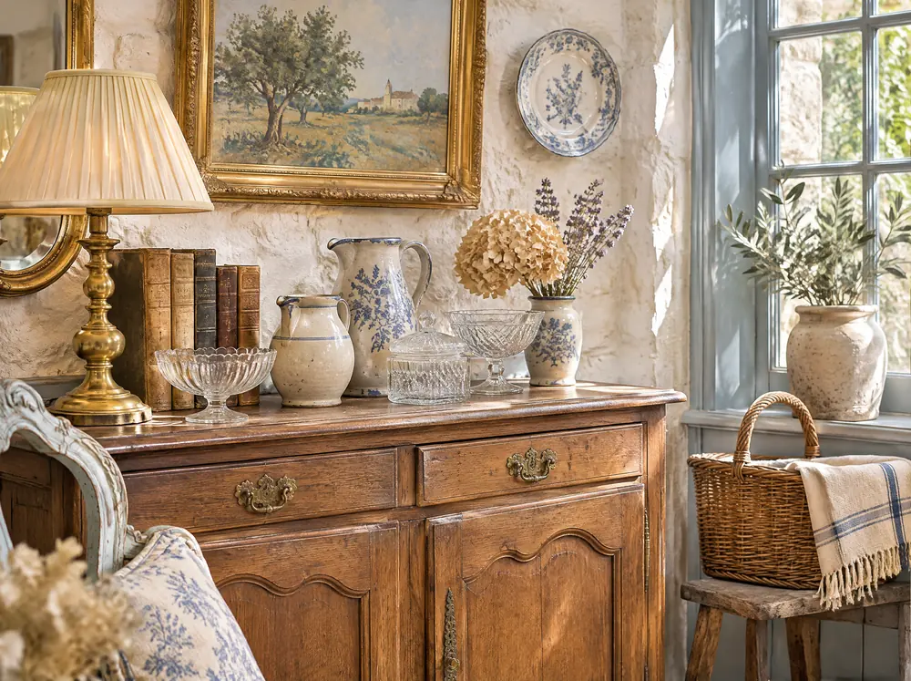
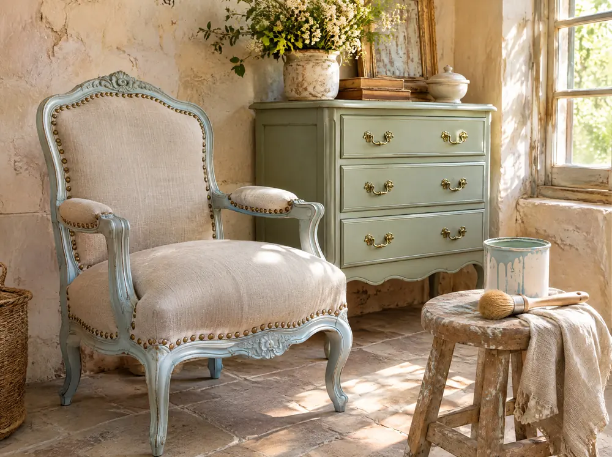
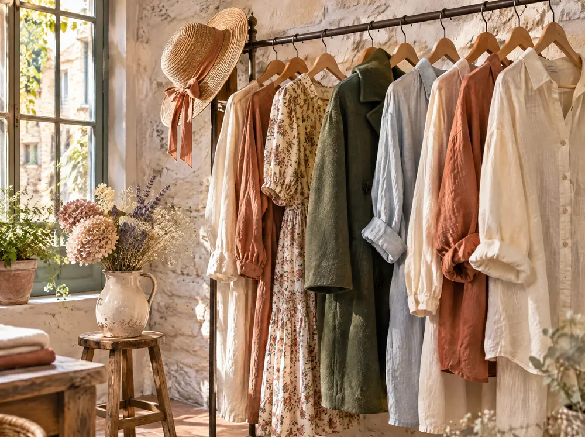
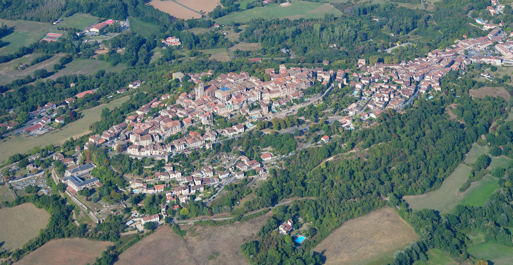

Chez Isabelle Décoret, à Cordes-sur-Ciel
On entre pour un bouquet, on ressort avec un fauteuil. Et entre les deux, on a papoté.
La boutique
Isabelle Décoret a installé Feuillages et Papotages à l'entrée de la cité de Cordes-sur-Ciel. Des fleurs, un dépôt-vente, des meubles restaurés, des vêtements de seconde main. Et, c'est dans le nom, le temps de papoter.
Fleuriste
Composez votre bouquet
Touchez un seau : la fleur vient se glisser dans le papier. Jusqu'à douze tiges, puis vous le demandez à Isabelle.
Vos fleurs de saison, vos compositions et vos prix : à compléter avec vos mots.
Votre bouquet se compose ici.
Aucune fleur pour l'instant.
Dépôt-vente
On dépose, on chine
Le principe : vous confiez un objet à la boutique, Isabelle le met en vente. On y trouve aussi de la décoration et de l'artisanat local.
Ce que vous acceptez et vos conditions de dépôt : à compléter avec vos mots.

Meubles restaurés
Un coup de pinceau
Isabelle restaure du mobilier. Faites glisser le pinceau sur la photo : le meuble reprend ses couleurs.
Photo d'illustration. Vos avant et après, vos techniques, vos commandes : à compléter avec vos mots.

AvantAprèsVêtements
Sur le portant
Des vêtements de seconde main attendent sur le portant de la boutique. Passez la main dessus, les cintres se balancent.
Vos pièces, vos tailles, vos arrivages : à compléter avec vos mots.

Papotages
Et on papote
Dans cette boutique, même les fleurs ont quelque chose à raconter. Touchez-en une, elle vous le dit.
Les mots de vos clientes, avec leur accord : à compléter.
Ouverture, à compléter
- Lundi00 h à 00 h
- Mardi00 h à 00 h
- Mercredi00 h à 00 h
- Jeudi00 h à 00 h
- Vendredi00 h à 00 h
- Samedi00 h à 00 h
- Dimanche00 h à 00 h

Cordes-sur-Ciel, fondée en 1222. La boutique vous attend en bas, avant de monter.